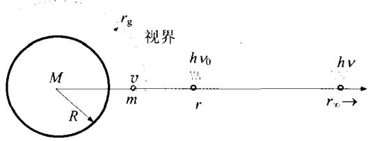
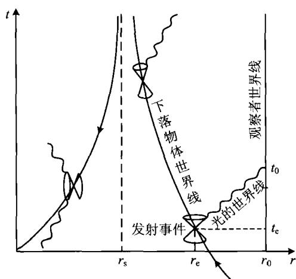
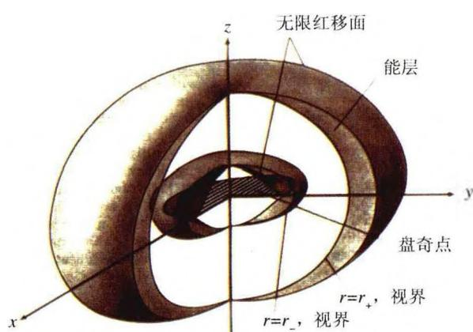
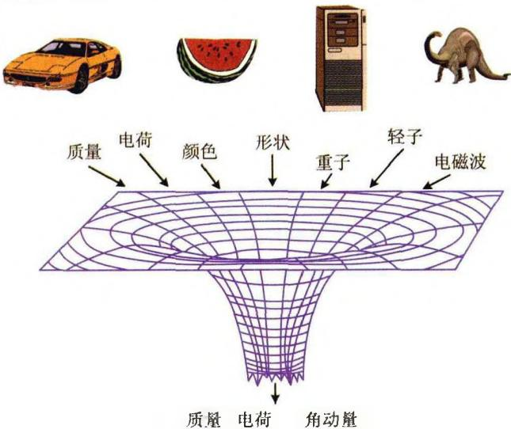
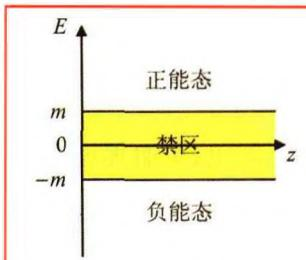
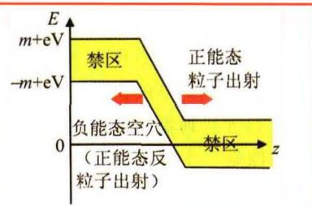
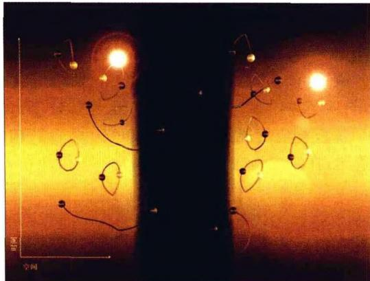
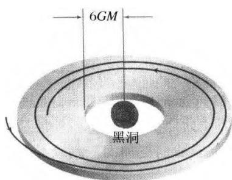
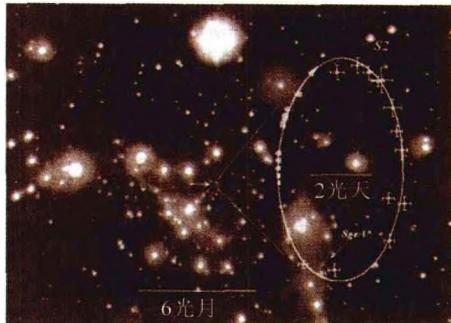
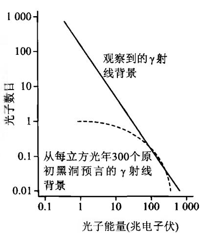

质量超过中子星临界质量 (\sim 3M_{\odot}) 的冷天体，将由引力坍缩而成为黑洞。“黑洞”(Black Hole)这个名词是美国天体物理学家惠勒(J. Wheeler)1968年创造的，但历史上最早提出关于黑洞的物理思想，是英国教士米歇尔(J. Michell)和法国数学家拉普拉斯(P. Laplace)。米歇尔在1783年就提出，光线的传播会受到引力的影响。他根据牛顿的万有引力理论推测，一个质量比太阳大500倍，但密度与太阳差不多的恒星，引力场可以强到使光线也不能逃逸。拉普拉斯也进行了类似的计算，他于1795年在《宇宙体系论》一书中写道：
天空中存在着黑暗的天体，像恒星那样大，或许也像恒星那样多。一个具有与地球同样密度而直径为太阳250倍的明亮星球，它发射的光将被它自身的引力拉住而不能被我们接收。正是由于这个道理，宇宙中最明亮的天体却很可能是看不见的。
事实上，比他们那个时代还要早100多年，人们就已经根据木星卫星运动的观测，知道光的速度大约是每秒30万km。米歇尔和拉普拉斯的计算方法我们早在中学就已经熟知，即根据能量守恒，一个质量为 M 、半径为 R 的天体，其表面的逃逸速度 \pmb{v} 是
\frac {1}{2} m v ^ {2} = \frac {G m M}{R} \Rightarrow v ^ {2} = \frac {2 G M}{R}\tag{4.43}
如果这一逃逸速度等于光速，即 v = c ，则有 R = r_{\mathrm{g}} \equiv 2GM / c^2, r_{\mathrm{g}} 称为牛顿引力半径。如果 v > c ，则意味着天体表面发出的光线不能到达无穷远的观测者，这样，天体就变成了黑洞。实际上，在 v > c 的情况下，黑洞的范围比天体本身要大，因为天体表面以外一定有某个地方 v = c ，该处到天体中心的距离显然就是牛顿引力半径 r_{\mathrm{g}} 。以 r_{\mathrm{g}} 为半径做一个球面，球面以内的区域都属于黑洞，它把整个天体包含在内（图4.7）。

图 4.7 黑洞的视界以及引力红移的牛顿力学解释按照广义相对论，在静态且球对称质量分布的情况下，球外部的时空度规由爱因斯坦场方程的史瓦西（K. Schwarzschild）解给出，即史瓦西度规。在这一度规下，时空间隔为（习惯上，取光速 c = 1）
\mathrm{d} s ^ {2} = \left(1 - \frac {2 G M}{r}\right) \mathrm{d} t ^ {2} - \frac {\mathrm{d} r ^ {2}}{1 - \frac {2 G M}{r}} - r ^ {2} \mathrm{d} \theta^ {2} - r ^ {2} \sin^ {2} \theta \mathrm{d} \theta\tag{4.44}
度规是广义相对论描述时空结构的一种数学工具，本书并不要求读者具有广义相对论的基础知识，但我们可以这样来理解(4.44)：在远离球体的地方，也就是当 r \to \infty 时，引力趋于零，时空就变为平直时空，此时(4.44)就回到我们熟悉的狭义相对论的形式（取光速 c = 1 ）
\mathrm{d} s ^ {2} = \mathrm{d} t ^ {2} - \mathrm{d} r ^ {2} - r ^ {2} \mathrm{d} \theta^ {2} - r ^ {2} \sin^ {2} \theta \mathrm{d} \varphi\tag{4.45}
容易看到(4.44)和(4.45)中，区别只在于等号右边第一、二两项的系数（它们分别相应于度规的时间分量和空间的径向分量）。平直时空即(4.45)中，这两个系数都是1（忽略正负号）；而(4.44)中，这两个系数都与1有了偏离，这表明时空产生了弯曲，且偏离越大，时空也越弯曲。在质量 M 给定的情况下，显然 r 越小时这种偏离越大，这表明引力场越强时，时空就越弯曲。因此，史瓦西解(4.44)给出的是弯曲时空的度规，它表明，时空弯曲的程度是与物质分布密切有关的，时空弯曲的程度也代表了引力场的强弱程度。把引力场与时空弯曲联系起来，这正是爱因斯坦引力理论的基本思想。
(4.44)表明,时空度规有两个奇点,它们分别是(这里恢复光速 c 的通常表示)
r = 0, \quad r = r _ {\mathrm{s}} \equiv \frac {2 G M}{c ^ {2}}\tag{4.46}
其中 r_{\mathrm{s}} 称为史瓦西半径，我们看到它与牛顿引力半径 r_{\mathrm{g}} 恰好相等。 r = r_{\mathrm{s}} 的球面称为视界（horizon），视界以内是黑洞，光不能从黑洞中逃逸，这与上面牛顿力学的简单分析结果是完全一致的。但两种理论给出的光子运动图像有本质不同。牛顿理论认为，光子可以从黑洞里面发出并到达黑洞以外的某个高度，然后再返回。而广义相对论却认为，光子不可能离开黑洞，即使从黑洞表面 r = r_{\mathrm{s}} 处发射的光子，也只能始终沿黑洞表面(视界)环绕运行。因此，黑洞的视界也称为单向膜，任何物体(包括光信号)都只能向视界里面落去，而不能从视界里面出来。
从上面的分析看到，任何一个静态球对称质量 M ，都对应有一个史瓦西半径 r_{\mathrm{s}} 或引力半径 r_{\mathrm{g}} ，它可以近似地表示为 r_{\mathrm{g}} = r_{\mathrm{s}} \approx 3(M / M_{\odot})\mathrm{km} 。对于太阳显然有 r_{\mathrm{g}} \approx 3\mathrm{km} ，对于地球这个值是 r_{\mathrm{g}} \approx 1\mathrm{cm} 。但是，不要产生误解，以为太阳和地球中心都有一个半径为 r_{\mathrm{g}} 的黑洞存在。实际上，只有当天体(或物体)的实际半径小于 r_{\mathrm{g}} 时，也就是天体的实际表面包含在视界以内时，该天体才成为黑洞。此时，视界掩盖了天体表面，我们不可能看到天体表面究竟在视界内部何处，也接收不到它发送的任何信息。而如果天体的实际半径大于 r_{\mathrm{g}} ，光线就可以从天体表面发出，并被远处的观测者所接收到。此时，该天体就不是黑洞，而且其中心也不存在一个半径为 r_{\mathrm{g}} 的黑洞。
我们再回到表4.1。表中最后一列所示的参数是 2GM / Rc^2 ，现在我们知道，这一参数就等于 r_{\mathrm{g}} / R ，也就是天体的引力半径与实际半径之比，或天体表面的逃逸速度 v 与光速之比的平方 (v / c)^2 （参见(4.43)中第二个等式）。可见这个比值越大，表明引力场越强。黑洞的这一比值为1，因此黑洞表面的引力场是所有天体中最强的。另一方面，我们从表4.1中还看到，从普通恒星到中子星，密度越来越大，因而可能会想到，黑洞的密度一定是所有天体中最大的。但实际上并不是这样。黑洞的密度定义为其质量 M 与视界所包含的全部体积之比，即 \rho\propto M/r_{g}^{3} 。因为 r_{g}\propto M ，故有 \rho\propto1/M^{2} ，显然质量小的黑洞密度大，质量大的黑洞反而密度小。例如，
\begin{array}{r l} & M = 1 0 ^ {1 5} \mathrm{g}, r _ {\mathrm{g}} = 1. 5 \times 1 0 ^ {- 1 3} \mathrm{cm} \Rightarrow \rho \sim 1 0 ^ {5 3} \mathrm{g/cm} ^ {3} \\ & M = 3 \times 1 0 ^ {5 5} \mathrm{g}, r _ {\mathrm{g}} = 4 \times 1 0 ^ {2 7} \mathrm{cm(10} ^ {1 0} \text {光年)} \Rightarrow \rho \sim 1 0 ^ {- 2 9} \mathrm{g/cm} ^ {3} \end{array}\tag{4.47}
实际上，第二个例子所示的质量就相当于我们今天所看到的宇宙的总质量，而 r_g 也相当于我们看到的宇宙的大小，因此这样一个黑洞的密度与宇宙的平均密度大致相同。这是非常低的密度，比地球上实验室里制造出来的真空极限密度还要低几个数量级。难怪有人据此而认为，我们的宇宙对外可能就是一个巨大的黑洞，我们就生活在这个黑洞的里面。但是，实际宇宙的时空度规并不简单就是(4.44)所示的史瓦西度规（至少，宇宙是在膨胀的！），而且我们也无法到达宇宙的外部。因而，这样的看法只能是一个无法验证的猜测而已。
我们还可以从另一个角度来分析黑洞的发光性质:把光子看成是能量为 h\nu 的粒子(故由爱因斯坦的质能关系,光子的质量就是 h\nu/c^{2} ),并用牛顿力学来描述光子的运动。如图4.7,一个能量为 h\nu_{0} 的光子从视界外面 r 处向远处发射,到达无穷远处后,光子的能量变为 h\nu 。在逃逸过程中,光子要克服引力势必须消耗能量,故能量 (E=h\nu) 将越来越小,这就表现为频率 \nu 越来越小,或相应地波长 \lambda 越来越大,即产生引力红移。
我们用牛顿理论来计算一下引力红移的结果。根据总能量守恒，
\begin{array}{r l} h _ {\nu} = & h _ {\nu_ {0}} - \frac {G M}{r} \left(\frac {h _ {\nu_ {0}}}{c ^ {2}}\right) \\ = & h _ {\nu_ {0}} \left(1 - \frac {G M}{r c ^ {2}}\right) \end{array}\tag{4.48}
式中可见，等号右边第二项代表 r 处的引力势能。把频率换成波长，上式化为
\frac {h}{\lambda} = \frac {h}{\lambda_ {0}} \left(1 - \frac {G M}{r c ^ {2}}\right) \Rightarrow \lambda = \lambda_ {0} \left(1 - \frac {G M}{r c ^ {2}}\right) ^ {- 1}\tag{4.49}
由此得到引力红移为
z \equiv \frac {\Delta \lambda}{\lambda_ {0}} = \frac {\lambda - \lambda_ {0}}{\lambda_ {0}} = \left(1 - \frac {G M}{r c ^ {2}}\right) ^ {- 1} - 1\tag{4.50}
式中 \lambda 为无穷远处接收到的光子波长， \lambda_0 为光源的固有波长。严格的广义相对论结果是
z = \left(1 - \frac {2 G M}{r c ^ {2}}\right) ^ {- 1 / 2} - 1\tag{4.51}
显然，两者在弱场近似的情况下是一样的，即
z \to \frac {G M}{r c ^ {2}} \quad \text {当} \frac {G M}{r c ^ {2}} \ll 1\tag{4.52}
对于中子星， M \sim M_{\odot} ， R \sim 10 \, km ，可得 z \sim 0.2 。如果光子从黑洞视界 r = r_{s} 处发射，则由(4.51)有 z \to \infty ，即观测到的光子波长为无穷大。因此视界也称为无限红移面。但是，波长无限红移的光子能量为零，这实际上相当于我们接收不到任何光子。利用(4.50)红移 z 的定义，(4.48)也可以写为
h _ {\nu} = h _ {\nu_ {0}} / (1 + z)\tag{4.53}
这一关系虽然是用牛顿理论得到的，但与广义相对论的结果一致。
(4.48)所示的光子频率变化也可以解释为时钟快慢的变化,因为现代的时间标准就是基于光的频率来确定的。(4.48)表明,无穷远处接收到的光子频率 \nu ,要小于光子在发射地点的固有频率 \nu_{0} 。这就是说,在远处的观测者看来,位于引力场中的钟,要走得比观测者本地的钟慢,而且钟的位置在引力场中越深(即 r 越小,势能越负),钟的走时就越慢。钟的走时也相当于物理过程的时间持续。因此,引力红移的结果也等于说,在远处的观测者看来,引力场中的一切物理过程(例如电磁振动、粒子运动以及生命过程等),都变慢了,而且引力场越强,这些过程就变得越慢。由(4.53)式不难看到,如果黑洞附近有一个固有光度为 L_{0} 的光源发光,则引力红移将引起两方面的观测效应:一方面是单个光子的能量变小,另一方面是观测者单位时间内接收到的光子数减少(光子发射过程变慢)。这两个效应都相当于乘一个因子 1/(1+z) ,因此综合起来,就会使观测到的光源光度 L 减小到真实光度的 1/(1+z)^{2} 倍,即
L = \frac {L _ {0}}{(1 + z) ^ {2}}\tag{4.54}
我们再来讨论一个有趣的例子，即一艘宇宙飞船向黑洞飞去并进入黑洞的过程。这里我们假设飞船的速度是平常的，因而可以不考虑狭义相对论效应，即没有明显的运动钟变慢和运动物体长度缩短的效应。但是，随着飞船逐渐接近黑洞并最终落入黑洞，飞船经过之处的引力场变得越来越强，这就使得远离黑洞的观测者看到的飞船运动，与平直时空中看到的有很大不同。在平直时空情况下，飞船将被引力很快拉向黑洞并迅速消失在黑洞中。而现在的情况下，观测者不仅看到飞船发出的所有信号产生引力红移，而且由于引力场使时空变得弯曲，光线也随之弯曲，因而观测者看到的飞船飞行速度也会产生显著的变化。
在狭义相对论中我们已经知道光锥的概念。狭义相对论处理的是平直时空，其度规由(4.45)给出。如果只考虑光子沿径向的运动，则对光子的运动有
\mathrm{d} s ^ {2} = 0 = \mathrm{d} t ^ {2} - \mathrm{d} r ^ {2}\tag{4.55}
因为光速取为 c = 1 ，故光子的世界线（即在时空图中的轨迹，取横轴为 r ，纵轴为 t )是
\frac {\mathrm{d} t}{\mathrm{d} r} = \pm 1\tag{4.56}
在 r-t 图上，这两条世界线就构成与 r 轴和 t 轴的夹角都是 45^{\circ} 的光锥。但在黑洞附近，情况就不同了，此时度规由 (4.44) 给出，沿径向运动的光子满足
\mathrm{d} s ^ {2} = 0 = \left(1 - \frac {2 G M}{r}\right) \mathrm{d} t ^ {2} - \frac {\mathrm{d} r ^ {2}}{1 - \frac {2 G M}{r}}\tag{4.57}
这样在时空图上，光子的世界线方程就变成

图4.8 黑洞附近的世界线\mathrm{d} t = \pm \frac {\mathrm{d} r}{1 - \frac {2 G M}{r}} = \pm \frac {\mathrm{d} r}{1 - r _ {\mathrm{s}} / r}\tag{4.58}
其中 r_{s} 为史瓦西半径。图4.8画出了一个向黑洞下落的物体（例如宇宙飞船）的世界线以及不同地点光子的世界线。从图中可以看到，在远离黑洞（即 r \gg r_{s} ）的地方，时空趋于平直，光子的世界线与(4.56)一致。而在黑洞附近，光子世界线的斜率显著大于1，即 \left|\mathrm{d}t / \mathrm{d}r\right| > 1 。离视界越近，这一斜率就越大，光锥就变得越加尖锐。在无限趋近视界的情况下，斜率变得
无穷大，即世界线趋于与 t 轴平行。这就使得远处的观测者要经过无穷长的时间，才能接收到紧邻视界表面处的飞船发来的信号。下面我们对此做一个简单计算。
根据(4.58)，光子从坐标位置 r = r 处发出、到达 r = L 处的观测者所经历的时间为
t = \int_ {r} ^ {L} \frac {\mathrm{d} r}{1 - r _ {\mathrm{s}} / r} = \int_ {r} ^ {L} \frac {r \mathrm{d} r}{r - r _ {\mathrm{s}}} = (L - r) + r _ {\mathrm{s}} \ln \frac {L - r _ {\mathrm{s}}}{r - r _ {\mathrm{s}}}\tag{4.59}
很显然，结果中的第一项 (L - r) 代表平直时空下的结果，第二项代表有引力场时，即时空弯曲时的结果。由此可见，当飞船无限接近黑洞视界表面 (r\rightarrow r_{s}) 时，有 t\to \infty ，这表明从飞船发出的光信号，要经过无穷长的时间才能到达位于 r = L 处的观测者。因此，设想飞船里的宇航员按照他自己的钟，每隔一个固定的时间，向远离黑洞的观测者发送一个无线电信号。当飞船距离黑洞还很遥远时，如果忽略狭义相对论效应，观测者也几乎是每隔同样的时间接收到一个信号。而当飞船距离黑洞越来越近时，观测者会发现，两个相继信号之间的时间间隔变得越来越长。如果这一飞行过程有电视同步转播，则观测者会看到，此时飞船的速度变得越来越慢。如果还可以接收到宇航员发来的舱内电视图像以及身体测试信号，观测者会发现，宇航员的活动和新陈代谢的速率也变得越来越慢。当飞船非常接近黑洞的视界时，飞船的运动以及宇航员的一切活动看起来就像是停止了。由于从视界发出的光信号要经过无穷长的时间才能到达观测者，这就等于说，观测者将永远看不到飞船落入黑洞的那一幕，飞船将永远被“冻结”在视界的表面上。这种“冻结”也相当于时间的“冻结”，因此黑洞也被称为“冻结星”。
但是，在宇航员自己看来，一切都是正常的，并没有发生任何过程变慢或“冻结”的现象。他会按照事先预定的计划，在一个有限的时间内进入黑洞。如果可以进行物理实验，他会发现，实验结果与自由落体参考系中的几乎一模一样。当然，他会感到有潮汐力出现，这是由于任何天体表面附近的引力场都有一定的非均匀性（地球表面也是如此，只是比黑洞附近要微弱得多罢了）。而且，当飞船向着黑洞中心下落越来越深时，潮汐力将变得越来越强。潮汐力在视界处 (r = r_{\mathrm{s}}) 的大小是有限的，但在 r = 0 处将变得无穷大，这一后果将是可怕的：强大的潮汐力会把飞船和宇航员一起扯碎。这表明(4.46)所示的两个奇点中， r = 0 的奇点是一个真实的物理奇点，而 r = r_{\mathrm{s}} 的奇点并不是物理上的真实奇点。英国物理学家彭罗斯(R.Penrose)和霍金(S.Hawking)从1965年到1970年期间的研究表明，天体坍缩成黑洞的过程中，必然会出现无穷大的密度和时空曲率的奇点。如图4.8所示，视界内部 (r < r_{\mathrm{s}}) 的下落物体的世界线朝向奇点，光锥的前进方向也朝向奇点（这是因为在视界内部，时间轴和空间轴相互交换了）。这一奇点是坍缩天体和进入黑洞的宇航员的时间终点，而且是无法逃离的：即使是装备最强力引擎的飞船，也不能躲开奇点从而避免与它的碰撞。按照广义相对论的计算，在黑洞内部启动飞船引擎，不论朝那个方向飞行，不仅不能逃离奇点，反而会加速与奇点的碰撞！根据霍金的计算，虽然广义相对论也存在一些解，使得宇航员可以穿过一个“虫洞”进入宇宙的另一区域，即通过一种特殊的时空旅行来避免和奇点的碰撞，但可惜的是，所有这些解都是不稳定的。一个很小的干扰（例如宇航员自身的存在），就可能使“虫洞”迅速中断，宇航员还是要撞到奇点从而结束他的时间（生命）。因此，我们可以把但丁形容地狱入口的话用到黑洞的视界：
“进入此间的人们，放弃所有的希望吧。”（但丁：《神曲》地狱篇）
当然，奇点处无穷大的密度是物理学家很难接受的。按照霍金的说法，在此奇点，科学定律和我们的预言能力都失效了。看来，奇点的物理本质还需要科学工作者继续深入研究。
上面讨论的黑洞是静态的，也称为史瓦西黑洞。如果黑洞有转动即具有角动量，则这样的黑洞称为克尔(R. Kerr)黑洞。与史瓦西黑洞不同的是，克尔黑洞的

时空度规很复杂,其中包括时间-空间的交叉项,并有角动量作为参数出现。这里我们不再写出克尔度规的具体形式,只画出克尔黑洞的视界和无限红移面(见图4.9)。从图中可以看出,克尔黑洞的视界和无限红移面都有两个,一个在内一个在外,且视界与无限红移面并不重合(对比一下,史瓦西黑洞的视界与无限红移面是重合图4.9 克尔黑洞的视界与无限红移面
的）。同时， r = 0 的奇点实际上是一个中心位于原点的薄盘，盘中的物质密度为无限大。因此克尔度规也被解释为，它描述了一个转动的物质薄盘周围区域的时空几何。当角动量趋于零时，克尔黑洞就变回到史瓦西黑洞。
外无限红移面和外视界之间的区域称为能层。彭罗斯1969年发现，可以利用一个进出能层的粒子过程，从旋转黑洞中提取能量。这一过程的关键是，能层中的某些轨道具有负的总能量，即引力束缚能超过了静质量和动能之和。具体的操作办法是，让一艘宇宙飞船从无限远处沿一条正能轨道落入能层，并在那里用一种弹簧装置把一个物体（例如一块砖）从飞船中弹射出来，使它进入一条负能轨道，而飞船由于反冲进入一条能量增加了的正能轨道。于是砖块落入黑洞，飞船返回到无穷远处。因为由黑洞、飞船和砖块所组成的系统的总能量是守恒的，而且砖块携带一些负能进入黑洞，飞船必然携带相应数量的正能回到无穷远处。也就是说，飞船比它初始时具有了更多的能量，即飞船从能层中提取了能量。本质上，飞船提取的能量是从黑洞的转动动能中得到的。当黑洞俘获负能的砖块时，黑洞的转动速率稍有减小，并且黑洞的质量也稍有减小，减小的数量与飞船提取的能量相当。这种从旋转黑洞中提取能量的过程称为彭罗斯过程。如果不断以这种方式提取能量，则黑洞的旋转将越来越慢，最后将停止转动，能层消失。克尔黑洞最终也就变成为史瓦西黑洞。
除了史瓦西黑洞和克尔黑洞之外，最普遍的情况是黑洞同时具有质量 M 、角动量 J 再加上电荷 Q 。这样的黑洞称为克尔-纽曼(Kerr-Newman)黑洞。但实际的宇宙天体都是电中性的，因此我们不再讨论这一普遍情况。这里只指出，当星体坍缩成黑洞以后，将只剩下质量、角动量和电荷这三个守恒量还在继续起作用，黑洞以外的观测者可以通过实验来测定它们，而星体的其他的一切信息（例如化学组成、重子数、轻子数等）都在进入黑洞后彻底消失了。如果我们把任何东西丢进黑洞，就只能从黑洞周围的场的变化，得知丢进去的物体的质量、角动量和电荷这三个参量，而无法得知究竟是什么东西掉进了黑洞。人们把这一有趣的结果称为黑洞的“三毛定理”(图4.10)。在这一“定理”被确认之前(20世纪70年代前)，人们曾普遍认为，黑洞的形成必然伴随坍缩天体一切特性的消失，因而创造黑洞这一名词的惠勒，曾把黑洞称作是“无毛发”的。

图 4.10 黑洞的“三毛定理”我们再来补充一点关于奇点的讨论。既然 r = 0 的奇点是物理的，而视界（或无限红移面）所代表的奇点是非物理的，因此必然会引发一个问题：自然界中是否存在不被视界包围的、或裸露的奇点？虽然裸奇点在数学上是必然存在的，例如爱因斯坦场方程的解，但在真实的世界中却从来没有发现过它们。由此彭罗斯猜测，也许自然界有一个潜在的法则，使得一个物体在完全引力坍缩时，不会导致一个裸奇点，而是导致一个隐藏在视界中的奇点。彭罗斯的这一猜测现在被称为宇宙监察猜想（cosmic censorship conjecture），这一猜想至今还没能够得到证明。这一猜想并不禁止在引力场方程的数学解中存在裸奇点，它禁止的只是这样一个裸奇点在引力坍缩中形成。这也就是说，引力坍缩中只能形成被视界包围的奇点，而不能形成裸奇点；或者说，只有奇点、没有视界的黑洞是不存在的。
20世纪70年代初，以色列物理学家贝肯斯坦(J.Bekenstein)首先引入黑洞的温度和熵等概念（当时他还只是普林斯顿大学的一名研究生），接着霍金又创立了黑洞的量子力学。这样，黑洞这个起源于18世纪的古老概念，就被现代引力论、量子论、热力学、统计物理等理论重新武装，使得黑洞的研究获得了巨大的生命力。正因为如此，黑洞物理学已成为当代物理学最热门的前沿领域之一。
1972年，霍金与另外两位合作者（美国耶鲁大学的J. Bardeen和英国剑桥大学的B. Carter)合写了一篇关于黑洞力学的论文。他们在论文中提出，一个黑洞的力学性质可以用两个参量来表征：黑洞的面积（即视界的面积，对于史瓦西黑洞， A = 4\pi r_{s}^{2} ）和视界的表面引力（以单位质量物体在视界表面获得的引力加速度表征，即 g = GM / r_{s}^{2} ）。这两个参量非常类似于热力学中的熵和温度。基于这一类似性，他们给出了与热力学四大定律相对应的黑洞力学的四大定律。其中第零定律说，平衡状态下的黑洞视界上所有的点都具有同样的表面引力。第一定律表明，在黑洞的演化过程中，质量、转动速度和角动量的演化都可以表示为视界面积和表面引力的函数。第二定律的内容是，宇宙中所有黑洞的面积之总和不会随时间减小。最后，第三定律声称，经过有限次的转换把黑洞的表面引力递减到零是不可能的。这些定律的普遍证明非常复杂，有的需要用到专门的拓扑学知识，故对此我们就不再深究了。
这里我们只简要讨论一下第二定律，即黑洞的总面积不会减小，这一定律也称为霍金定理。显然，一个孤立的黑洞质量不变，因而可以保持视界面积恒定不变。
但如果考虑黑洞对周围物质的吸积，质量的增加必然会导致面积的增加。也就是说，由于黑洞的视界是单向膜，故质量只能越来越大，因而视界面积越来越大。如果两个黑洞发生碰撞，例如两个史瓦西黑洞，它们的半径分别为 r_{1s} 和 r_{2s} ，则碰撞后生成的新黑洞的半径为
r _ {\mathrm{s}} = \frac {2 G M}{c ^ {2}} = \frac {2 G}{c ^ {2}} (M _ {1} + M _ {2}) = r _ {1 \mathrm{s}} + r _ {2 \mathrm{s}}\tag{4.60}
面积是
A = 4 \pi r _ {\mathrm{s}} ^ {2} = 4 \pi \left(r _ {1 \mathrm{s}} + r _ {2 \mathrm{s}}\right) ^ {2} = A _ {1} + A _ {2} + 8 \pi r _ {1 \mathrm{s}} r _ {2 \mathrm{s}} > A _ {1} + A _ {2}\tag{4.61}
显然总的面积增加了。碰撞过程相当于一个黑洞进入另一个黑洞的视界。而相反的过程是禁戒的：一个大黑洞不能分裂为两个小黑洞，因为这样就相当于一个黑洞从另一个黑洞的视界中跑出来，将违背视界只进不出的单向原则。正由于黑洞只能吸收质量而使其面积增大，或者由于合并使其总面积增大，所以我们的宇宙中黑洞面积的总和是只能增加不能减小的。
黑洞面积不减小的特征，使我们想起热力学第二定律：宇宙中熵的总和是永不减少的。这表明视界面积与热力学熵之间有很强的相似性。贝肯斯坦1973年证明，黑洞质量 M 的变化与视界面积 A 的变化之间满足下列关系（对史瓦西黑洞）
\mathrm{d} M = T \mathrm{d} \left(\frac {k c}{4 \pi \hbar G} A\right)\tag{4.62}
其中 \hbar 是普朗克常数， k 是玻耳兹曼常数。这一关系十分类似热力学第一定律
\mathrm{d} E = T \mathrm{d} S\tag{4.63}
因为 M 和 E 之间只相差一个常数因子 c^2 ，因而(4.62)中， T 就应当是热力学温度， A 就应当与热力学熵 S 成正比，即
S = \frac {k c ^ {3}}{4 \pi \hbar G} A\tag{4.64}
再来看一下温度如何随质量而变化。以史瓦西黑洞为例，
A = 4 \pi r _ {\mathrm{s}} ^ {2} = 1 6 \pi G ^ {2} M ^ {2} / c ^ {4}\tag{4.65}
因为 S \propto A ，所以有
S \propto M ^ {2} \Rightarrow \delta S \propto M \delta M\tag{4.66}
取 c = 1 单位制，则 E = Mc^2 = M ，这样由(4.63)和(4.66)得到
\delta M = T \delta S \propto T M \delta M\tag{4.67}
这表明
T M = \text { 常量 } \Rightarrow T \propto 1 / M\tag{4.68}
严格的计算结果是
T = \frac {\hbar c ^ {3}}{8 \pi G k} \frac {1}{M} \simeq 6 \times 1 0 ^ {- 8} \left(\frac {M _ {\odot}}{M}\right) K\tag{4.69}
可见质量越小的黑洞温度越高，而质量越大的黑洞温度越低。例如太阳质量 (M=M_{\odot}) 的黑洞，温度只有 T\simeq6\times10^{-8}K ，几乎达到绝对零度；而 M=10^{15}g 的小黑洞的温度是 T\simeq10^{12}K ，比核爆炸中心的温度还要高许多。前面提到，霍金等人曾指出，视界的表面引力类似于热力学温度。视界表面的引力是 g=GM/r_{s}^{2} ，由 r_{s}\propto M 显然有 g\propto1/M ，这与(4.69)所示的温度-质量关系是一致的。霍金等人提出的黑洞力学的第三定律，即不能经过有限次的转换把黑洞的表面引力递减到零，也使我们想起热力学第三定律，即不能用有限次的过程使系统的温度达到绝对零度。这两个第三定律之间的对应，非常清楚地表明了黑洞的表面引力与黑洞温度之间的对应。
下面把黑洞的主要热力学性质做一个小结：
\bullet 黑洞的熵 S 与视界面积 A 成正比，与黑洞质量 M 的平方成正比。由于宇宙中熵的总和永不减少，因而任何涉及黑洞的力学过程，不能使黑洞的总视界面积减小。这就是霍金定理。
\bullet 黑洞的温度 T 与黑洞质量 M 成反比，这说明温度只与引力性质有关。小质量黑洞的温度高，大质量黑洞的温度低。
- 黑洞不能与外界处于稳定的热平衡。这是由于 T \propto 1 / M ，即 T \propto 1 / E ，因而黑洞这一热力学系统的比热是负的： \mathrm{d}E / \mathrm{d}T < 0 。负比热的物体不能与外界处于稳定热平衡。因为如果原来处于热平衡，则由于涨落，例如从外界吸收一点能量（质量），温度就会变低。这样就更需要吸收能量，从而使得温度进一步降低。如此一发而不可收，最后热平衡被完全破坏。
- 经典的黑洞理论与热力学第二定律是矛盾的。按照热力学第二定律，能量必须由温度高的物体流向温度低的物体。假如 T_{\text{黑洞}} > T_{\text{环境}} ，则能量必须由黑洞流向外界。但是，根据经典的黑洞理论，任何信息，包括能量，都不能由黑洞内部流到外部。这样就产生了矛盾，解决这一矛盾的途径是黑洞量子力学的建立。
经典黑洞的主要特点是，黑洞是绝对“黑”的，即不能有任何东西（包括光）从黑洞中跑出来，也不能从视界里面提取任何一点能量。但1974年霍金提出黑洞的量子辐射机制，彻底改变了黑洞只进不出的特征，使黑洞的古老概念发生了根本性的变革。霍金的这一理论的关键在于对真空态的理解。
最早对真空态作出科学理论解释的，是相对论量子力学的开创者、英国物理学家狄拉克(P. Dirac)。在他之前人们对真空的理解是, 真空即表示一无所有的虚空, 它只不过是空间的一个载体, 此空间中没有任何物质, 也没有任何能量。它可以允许粒子和电磁波自由穿过, 但不产生任何物理效应。而狄拉克赋予了真空全新的意义。他由狭义相对论关系式 E^{2} = m^{2}c^{4} + p^{2}c^{2} 出发, 其中 m 和 p 分别表示粒子的静质量和动量, 并用德布罗意关系把动量 p 换成波数 k (k \equiv 2\pi / \lambda, p = h / \lambda = 2\pi \hbar / \lambda = \hbar k) , 再取 c = \hbar = 1 的自然单位制, 得到
E ^ {2} = m ^ {2} + k ^ {2}\tag{4.70}
此式给出
E = \pm (m ^ {2} + k ^ {2}) ^ {1 / 2}\tag{4.71}
按照经典的相对论场论的看法，真空是正负能态都空着的状态。而狄拉克认为，在没有外场的平直空间，真空是所有正能态都空着，而所有负能态都充填一个粒子的状态（即所谓“狄拉克海”）。只不过正负能态之间有一个禁区（见图4.11a），使负能态的粒子不能跃迁到正能态，反之亦然，故正能粒子是稳定的，真空也是稳定的。但是在有外加场，例如静电场 V(z) 的情况下，电荷为e的粒子将增加静电势能eV。于是，(4.70)和(4.71)现在变成
(E - e V) ^ {2} = m ^ {2} + k ^ {2}\tag{4.72}
E = e V \pm (m ^ {2} + k ^ {2}) ^ {1 / 2}\tag{4.73}
从强电场区域到远离电场区域之间有一个过渡，这样就会使正负能态出现交错，两者之间的禁区相当于一段势垒(如图4.11b)。狄拉克认为，考虑到粒子的波动性，


图4.11a 物理真空的能态 图4.11b 静电场附近的真空能态由于量子隧道效应，负能态的粒子会有一定的几率穿透势垒，从正能态出射，形成正能粒子。此时负能态少了一个粒子，出现空穴，此空穴即正能态的反粒子。上述结果是，在空间的不同地点将出现正反粒子对。狄拉克的理论预言了正负电子对的产生及湮灭，他的预言很快便被美国加州理工学院的安德森(C. Anderson)以发现正电子所证实。狄拉克的理论不仅使人们认识到反物质的存在，而且赋予真空以全新的概念，即量子真空。这样的真空只是一种能量为最低的状态，而不是能量为零的状态，因为能量严格为零的状态在自然界中是不存在的。所以，真空不是真的一无所有，而是“沸腾的真空”，其中不断有能量涨落发生。按照现代量子真空的概念，真空中充满着虚粒子及其反粒子，真空能量的涨落使得它们不断地自发成对创生，又不断湮灭。例如，一对正负电子可以在 10^{-21} 秒内自发产生和消失。质量更大的正反粒子存在的时间比这还要短，因为按照量子力学的不确定关系，
\Delta t \Delta E \geqslant \frac {\hbar}{2}\tag{4.74}
故质量越大(即 \Delta E 越大)时 \Delta t 越小。对正反质子而言,这一时间尺度(相当于粒子存在的寿命)就只有不到 10^{-24} 秒。在没有任何外场的情况下,粒子对不断产生和湮灭,所以平均效果就没有任何粒子或反粒子真正产生出来,这些粒子也不能被直接观测到,因而被称为虚粒子。但在有外场例如电场存在的情况下,当一对虚正负电子产生时,它们就会被电场沿相反方向分离。电场越强,就能使它们分离得越远。当电场强到一定程度时,虚正负电子不能够再碰到一起发生湮灭,这时的虚粒子就变成实粒子,可以被我们观测到。实粒子的能量显然来源于电场,而这时的真空就被称为真空极化。1947年兰姆(W. Lamb)和库什(P. Kusch)通过著名的“兰姆位移”实验,验证了真空极化的理论,从而获得了1955年的诺贝尔物理学奖。这一实验的原理是,考虑真空中的一个氢原子,它周围不断有虚粒子对产生和湮灭。由于氢原子的原子核和电子所产生的电场会使邻近的真空极化,这使得带有相反电荷的虚粒子对分离,从而在很短的瞬间形成一股微弱的电流。这一电流会使电子在轨道上颤动,结果使氢原子发出的辐射出现微小的频率移动,即兰姆位移。狄拉克创立的量子真空理论至今仍然有着巨大的科学意义,后面我们讨论宇宙学时还要用到量子真空的概念。
我们再回到霍金提出的黑洞量子辐射机制。霍金指出，黑洞视界附近的强引力场就像是一个势垒。但黑洞内部的粒子可以有一定的几率，穿透这个势垒跑到外面，从而形成黑洞的发射。从真空极化的观点，霍金认为，在黑洞的视界周围，真空会被强引力场所极化。当引力场足够强时，视界附近产生的正反虚粒子对，会分离一段很短的时间和距离，从而出现四种可能性：正反粒子直接湮灭；双双落入黑洞；正粒子落入黑洞而反粒子跑出来；反粒子落入黑洞而正粒子跑出来（见图4.12）。根据霍金的计算，最后一种可能性实现的几率最大。当从视界附近跑出来的粒子被无穷远处的观测者接收到时，就变成为正能的实粒子。反粒子带有负能，黑洞俘获了负能粒子，就减少了它的能量（质量）。故真空涨落总的结果是，黑洞不断发射正能粒子，这些粒子的能量来源于黑洞质量的减少。而质量的减少意味着视界面积的减小，这样，霍金过程就违背了黑洞的面积不减定律。但是要注意，黑洞发射的这些粒子（包括光子）同样具有熵，这些熵将补偿黑洞熵的减少。所以到最后，尽管面积定律被破坏了，但热力学第二定律并没有被违反。

图4.12 黑洞视界附近的正反粒子对黑洞的辐射是稳定的，可以有确定的辐射强度。霍金从理论上得到了史瓦西黑洞的辐射强度公式，这一公式当 m=0 时与黑体辐射的普朗克公式一致。因此，黑洞的确可以当作一个具有一定温度的黑体来看待。也就是说，上一小节讨论过的黑洞的温度概念仍然适用，其与黑洞质量的关系仍为(4.69)所示。一个质量等于太阳质量的黑洞，温度接近绝对零度，它只能辐射零质量的粒子，例如光子、零质量中微子以及引力子。随着质量由大变小，温度就由低变高，各种粒子逐渐都开始有显著的辐射。例如，质量像小行星那样大的黑洞，温度为 6000 \, K ，也还只能辐射可见光和零质量粒子。当质量减小到 10^{15} \, g 时，其温度高达 10^{12} \, K ，除了 \gamma 光子和其他零质量粒子外，还可以辐射电子、 \mu 介子和 \pi 介子。但质量显著小于太阳质量的黑洞，不能由恒星的引力坍缩而形成。这样的“微黑洞”只能在宇宙的早期阶段，形成于非常致密的原初物质的涨落。
鉴于黑洞的热辐射性质,可以用斯特藩-玻尔兹曼定律来估算一下黑洞的辐射功率:
\begin{array}{r l} \frac {\mathrm{d} E}{\mathrm{d} t \cdot A} & = \sigma T ^ {4}, A = \frac {1 6 \pi G ^ {2}}{c ^ {4}} M ^ {2}, T = \frac {\hbar c ^ {3}}{8 \pi G k} \frac {1}{M} \\ & \Rightarrow \frac {\mathrm{d} E}{\mathrm{d} t} \simeq 3. 6 \times 1 0 ^ {4 5} M ^ {- 2} \mathrm{erg/s} \end{array}\tag{4.75}
其中 M 以 \mathbf{g} 为单位。黑洞的全部能量为 E = Mc^2 ，因而以上述功率发出辐射时，
黑洞寿命的估计值为
\tau \simeq \frac {E}{\dot {E}} \simeq 3 \times 1 0 ^ {- 2 5} M ^ {3} (\text {秒}) \approx 1 0 ^ {6 8} \left(\frac {M}{M _ {\odot}}\right) ^ {3} (\text {年})\tag{4.76}
可见小质量的黑洞寿命极短，在很短时间内即释放掉大量能量，就如同强烈的爆发一样。例如 M \simeq 10^{8} \mathrm{~g} 的微黑洞， T \simeq 10^{18} \mathrm{~K} ，寿命只有 \tau \simeq 0.3 \mathrm{~s} 。而对于 M \simeq M_{\odot} 的黑洞，寿命为 \tau \simeq 10^{68} 年，大大长于宇宙的年龄，这样缓慢的辐射可以看成是蒸发（称为“霍金蒸发”）。值得指出的是，对于 M \simeq 10^{15} \mathrm{~g} （大约相当于一座山的质量，但半径只有 10^{-13} \mathrm{~cm} ，与质子差不多）的黑洞， \tau \simeq 10^{10} 年，这一寿命与宇宙年龄相仿。但是，在它最后的 0.1 \mathrm{~s} 里释放的能量，相当于100万颗百万吨级的氢弹一起爆炸的能量。因此有人猜测，在宇宙诞生时期所形成的一些微黑洞，可能将在今天达到其最后爆发的阶段。
讨论：
考虑量子效应后，黑洞现在既有发射又有吸积。当 T_{\text{黑洞}} < T_{\text{环境}} 时，黑洞的发射小于吸积，热量（能量）由周围流向黑洞；而当 T_{\text{黑洞}} > T_{\text{环境}} 时，发射将大于吸积，热量由黑洞流向周围物质。因此，两种情况下都是热量从高温流向低温，这就解决了经典黑洞理论的“热力学危机”。
但是，由于 T_{\text{黑洞}} \propto 1 / M ，故上述两种情况下仍使温度差别越来越大。例如 T_{\text{黑洞}} < T_{\text{环境}} 时，热量由周围流向黑洞，这使得黑洞的质量进一步变大，从而温度更低。这是因为，有辐射的黑洞仍然是一个负比热系统，它吸收热量后温度反而降低，放出热量后温度反而升高。这样的系统不会导致热平衡的出现，而是会越来越偏离热平衡。
- 黑洞的理论还触及物理学的其他一些根本问题。因为黑洞只有3个参数，即3个守恒量 M, J, Q 。坍缩成黑洞后，一切其他参量都消失了，例如重子数、轻子数等，我们对于黑洞内部的细节什么都不知道。因而，如果黑洞吸收了某些物质后再发射，那时只能考察 M, J, Q 这3个参量，其余的参量就都不得而知。我们不能预言黑洞吸收了某些物质之后，会发射出什么东西来，也就是在吸收的物质和放出的物质之间，完全没有诸如重子数、轻子数守恒等必然制约。因此，黑洞物理比量子力学有着更大的不确定性，这种不确定性触及到了因果律。
● 关于白洞。广义相对论还预言了与黑洞相反或对称的过程，即白洞的存在。它的视界也是一个单向膜，但是只出不进，只向外部区域发射物质和能量，而不吸收外部的任何物质和辐射。也可以说，白洞是黑洞的时间反演。白洞和黑洞的外部引力性质一样，例如都可以用史瓦西度规来描述。白洞也是一个引力源，可以被其他天体吸引，并同时吸引其他天体。白洞附近的引力场也很强，周围的尘埃、气体会不断地被吸积而落到它的附近。不过这些物质无法进入白洞内部，只能在其边界形成物质层。有人认为，白洞可能处于类星体和活动星系核的中心，当白洞内部喷射出来的物质与周围吸积的物质在边界上猛烈相撞时，可以释放出巨大的能量，产生X射线、宇宙射线、射电爆发等现象。当然，白洞迄今为止只是一种纯理论模型，尚未被观测所证实。
正因为黑洞所具有的奇特性质和神秘色彩，以及它们在恒星演化乃至宇宙演化过程中的重要地位，长期以来，人们一直以极大的热情，努力在宇宙中寻找黑洞。虽然宇宙中估计存在的黑洞数量应当十分丰富，但至今人们搜寻黑洞的努力收效甚微。其中的主要原因之一是，要确定一个天体是黑洞，就需要分别测定它的质量和半径，然后把这一半径与视界半径相比较，只有小于等于视界半径的才是黑洞。质量的测定相对还容易一些，例如可以通过双星系统的轨道运动测量。半径的测量就极其困难了。黑洞视界的尺度很小，例如太阳质量的黑洞，视界大小只有几公里。而恒星的平均距离为光年量级，在这样远的距离上是无法分辨出几公里大小的物体的。即使是质量大到 10^{8}M_{\odot} 的巨型黑洞（一般认为位于星系核中心），其视界大小也只有 10^{8} \sim 10^{9}\mathrm{km} ，大约为光小时量级。而星系之间的距离至少都在十几万、几十万光年以上，要在这样远的距离分辨出尺度为光小时量级的黑洞，就相当于从几十万公里的远处看清一只高尔夫球，这显然远远超出了现代天文观测仪器的分辨本领。此外，黑洞周围通常聚集着大量星际物质，它们会发出各种能量的辐射，从而形成一个比黑洞自身大得多的发光区域，使得我们更加无从判断黑洞的真实大小。
既然不可能直接看到黑洞，就需要通过其他途径来间接探测黑洞。下面我们简要介绍一下对于不同大小黑洞的探测。
这是指质量在 3\sim 15M_{\odot} 范围的黑洞。双星系统是最有希望找到恒星级黑洞的地方。我们知道，孤立的单星在宇宙中是很少见的，大多数恒星存在于双星系统之中，作为恒星演化最后产物的黑洞也是如此。特别是在密近双星中，通过黑洞吸积伴星物质后发出的高能辐射，例如X射线辐射和 \gamma 射线辐射，我们就有可能侦测到黑洞的存在。但双星中的致密星也可能是白矮星或中子星，因此，如何排除其他可能性而唯一地证认黑洞，就成为问题的关键。
黑洞吸积伴星物质，通常是在黑洞周围形成一个吸积盘。这是由于被吸积的物质通过内拉格朗日点而进入黑洞的引力范围时，是带有角动量的。气体动力学的计算表明，有角动量的气体被致密星所吸积，最后总是会形成吸积盘（不仅是黑洞，白矮星和中子星周围都可能形成吸积盘）。吸积盘内的气体由于摩擦加热而发出热辐射。辐射的能量大小取决于有多少引力势能转换为辐射能。一个由无穷远处下落的粒子，到达与致密星中心距离 r 处时发出辐射，其能量转换效率 \eta 定义为引力势能 E 与粒子静能 mc^2 之比：
\eta \equiv \frac {E}{m c ^ {2}} \sim \frac {G M}{r c ^ {2}} = \frac {1}{2} \frac {r _ {\mathrm{g}}}{r}\tag{4.77}
其中 r_{\mathrm{g}} 为该致密星的引力半径（对史瓦西黑洞即为视界半径 r_{\mathrm{s}} ）。可见 r 与 r_{\mathrm{g}} 越接近，辐射效率就越高。白矮星的半径有几千公里，而 r_{\mathrm{g}} 只有几公里，故能量转换效率很低，即使粒子从无穷远落到白矮星表面， \eta 也只有万分之几。当粒子由远处落到白矮星表面时，只能发出可见光和紫外辐射，达不到X射线的能量。对中子星，如取 r \approx 10 \mathrm{~km}, r_{\mathrm{g}} \approx 6 \mathrm{~km} ，则有 \eta \approx 0.3 ，对黑洞 r \approx r_{\mathrm{g}} ，这一值可以高达 \eta \approx 0.5 。当然 \eta 只是一个理论的上限值，实际的能量转换效率达不到这么高，因为有一部分引力势能要转化为粒子的热运动能，并不是全部转化为辐射能。对黑洞

而言，粒子也并不是直接落到黑洞的视界表面，而是先进入吸积盘的外边缘，然后逐渐螺旋式地落向黑洞（见图4.13）。对于球对称的史瓦西黑洞，吸积盘将在 3r_{g}=6GM/c^{2} 处终止，这是环绕黑洞运动的粒子的最小稳定轨道半径（小于此半径处，吸积物质将很快落入黑洞并消失，因此该处的物质密度急剧减小）。理论计算结果给出，史瓦西黑洞的吸积，可以把下落物质静质量能的5.7%转换为辐射能，而克尔黑洞的吸积可以转换图 4.13 史瓦西黑洞的吸积盘简图
多至 42\% 的静质量能。因此，致密星特别是黑洞的能量转换效率是非常高的，远高于恒星核反应的能量转换效率。我们可以回忆一下，核反应的能量转换效率只有 0.7\% ，在这个意义上，核反应并不能算是真正的高效过程。自然界中真正的高效能量转换过程只有致密星特别是黑洞的引力吸积。由此，我们再次领略了引力的巨大威力。
总之，现在我们知道，X射线双星中的致密星只能是中子星或黑洞。但中子星通常是脉冲星，因而如果在X射线双星中观测到X射线脉冲现象，就可以肯定其中的致密星是中子星而不是黑洞，因为黑洞是不会发出脉冲辐射的。再有，如果发现双星中出现 X 射线暴，且 X 射线暴有间歇再发现象，也可以肯定致密星是中子星而不是黑洞。因为如上一章所述，中子星产生的 X 射线暴是可以再发的（当吸积物质在中子星表面堆积到一定数量就可以重复再发，如白矮星造成的再发新星那样）。而黑洞没有固态的表面，吸积物质更不会在表面堆积，因而就不会有再发的 X 射线暴。因此，既没有脉冲周期性也不是再发的 X 射线双星，就成为搜寻恒星级黑洞的重点目标。但即使这样，也还不能完全排除中子星的可能性。因为无论是持续的 X 射线辐射，还是偶发的 X 射线暴，都有可能来源于吸积盘，其中也包括中子星的吸积盘。因此，必须用更精密的方法，来判断位于吸积盘中心的是中子星还是黑洞。吸积盘的内部是高温湍动的气体，且是局部不稳定的。某些局部区域可能在瞬间被加热到几亿度的高温，从而产生偶发的 X 射线光度突然增大甚或 X 射线暴。在观测上，这就表现为 X 射线光变。由光变的时标可以大致判断发光区域的大小。观测到的 X 射线双星的光变时标很短，大约在毫秒量级，这说明光变区域的大小不超过几百公里。但这是中子星或黑洞都允许的上限，故还没能最终解决两者的取舍问题。
看来，要确定双星中的致密星到底是中子星还是黑洞，最后只能根据它们的质量了。我们已经知道，中子星的质量有一个上限，即大约 3M_{\odot} 。超过这一质量上限的致密星，唯一地只有黑洞。但遗憾的是，要直接测定双星中致密星的质量是不可能的，只能利用可见子星的谱线移动来得到轨道参数，再根据开普勒定律得到两颗星的总质量，最后由可见星的质量估计（通过质光关系）得到致密星的质量估计。这一系列的操作中都包含有误差，更何况可见子星的光谱常常会掩没在吸积盘光谱的背景之中。因此，质量的测量中仍然有许多不确定性。
由上面的分析可见，尽管恒星级黑洞的估计数量十分巨大，但要最终确认它们，的确是非常困难的事情。这也就是至今对恒星级黑洞的证认成果寥寥的原因。到目前为止，实际观测已经发现了一批恒星级黑洞的候选者，其中著名的有天鹅座X-1，大麦哲伦云里的LMCX-3，麒麟座V616以及SS433等。这些天体都是很强的X射线源，并且有时标很短的光变。但由于上面所述的种种不确定因素，所以至今它们还只能算作是黑洞的候选者，而不能百分之百地认定为就是黑洞。
它们的质量范围为 100\sim 1000M_{\odot} ，也可能超过 10^{4}M_{\odot} 。这样的黑洞可能通过所谓极亮X射线源(ULXs)的观测而被发现，钱德拉X射线空间天文台(CXRO)以及XMM-Newton卫星都已经观测到一些这样的X射线源，并且发现它们与一些球状星团的核心或低质量星系有一定相关性。但目前还不清楚，这样大小的黑洞是如何形成的。有人认为，可能是由于这些地方恒星密集，恒星可以通过不断并合而形成超大质量恒星，然后超大质量恒星的核心坍缩，成为黑洞。也有人认为，这些地方可能先形成了许多恒星级的黑洞，然后这些黑洞并合而成为中等质量的黑洞。
这是指星系中心可能存在的大质量黑洞，质量范围大约从 10^{5} \sim 10^{9} M_{\odot} 。这样大的黑洞如何形成也还是不清楚的。目前大致有两种看法，一种看法是，由于星系的碰撞，结果形成一个较大的星系，并同时在星系中心形成一个超大质量的黑洞，甚至可能形成双黑洞。还有一种看法是，它们是由中等质量的黑洞，通过不断吸积而增长变大的。
星系核是星系中恒星最密集的地方，并常伴随有强烈的射电、红外和X射线辐射。早在1971年，英国剑桥大学的天体物理学家林登-贝尔(D. Lynden-Bell)和马丁·里斯(Martin Rees)就提出，所有星系的核心都有超大质量黑洞存在，它们是星系形成的早期阶段，核心区域引力坍缩的结果。我们的银河系中心方向在人马座，由于该方向大量气体和尘埃对光的吸收，使得可见光波段几乎是不透明的。但射电、红外和X射线的辐射可以穿透气体和尘埃，使我们可以观测到银心的深处。银心的直径是30光年，这个范围内发出的总辐射强度是太阳光度的1000万倍。其中有银河系最亮的射电源——人马座 \mathbf{A}^* ，它的辐射中除热辐射外，还有明显的非热同步加速辐射。这一非热射电辐射的强度是太阳总光度的10倍，但辐射区域的尺度小于 30\mathrm{亿km} ，大约为土星轨道的大小。在这样小的尺度内只能是单个的射电源。脉冲星的射电辐射通常只有人马座 \mathbf{A}^* 的万分之一，双星X射线源在射电波段的强度也远达不到这一值（但其X射线辐射强度又远大于人马座 \mathbf{A}^* ），因而脉冲星和X射线双星都被排除在外。看来要确定人马座 \mathbf{A}^* 射电源的本质，必须想办法测算它的质量。
据 1983 年发射升空的红外天文卫星 (IRAS) 的观测, 银河系中心半径 5 光年的范围内分布着 200 万颗恒星, 恒星密度比球状星团还要高出 1000 倍。根据对这些恒星的速度弥散的测量, 得到银心 5 光年范围内的总质量应当在 (5 \sim 8) \times 10^{6} M_{\odot} 之间。而恒星的质量只有 2 \times 10^{6} M_{\odot} , 其余 (3 \sim 6) \times 10^{6} M_{\odot} 的质量看来应当属于银心处的黑洞。近年来, 利用光学干涉方法以及大型望远镜 (例如凯克望远镜) 所做的精密观测, 已经可以确定非常靠近银心处的恒星轨道。图 4.14 所示即为恒星 S2 围绕银心运转的轨道, 其中人马座 A* 位于椭圆轨道的焦点。该轨道周期为 P = 15.2 年, 偏心率为 e = 0.87 , 近银心点距离为 1.8 \times 10^{10} \mathrm{~km} \simeq 120 \mathrm{AU} (约 17 光小时)。这一距离只比冥王星的轨道半长轴大几倍! 根据上述数据不难算出, S2 的轨道半长轴为 a = 1.4 \times 10^{11} \mathrm{~km} , 再利用开普勒第三定律, 即得到中心天
体的质量为
M = \frac {4 \pi^ {2} a ^ {3}}{G P ^ {2}} \simeq 3. 5 \times 1 0 ^ {6} M _ {\odot}\tag{4.78}
更加精密的计算给出
M = (3. 7 \pm 0. 2) \times 1 0 ^ {6} M _ {\odot}\tag{4.79}
这样质量的一个黑洞，其大小约为 10^{7} km，只相当于太阳直径的不到十倍，对地球上观测者的张角只有约 10^{-6} 角秒，目前是无法直接观测的。除银河系中心外，还有其他几个邻近星系的中心也发现有超大质量黑洞存在的迹象，这些可能存在的黑洞的质量在 10^{6}M_{\odot} \sim 10^{9}M_{\odot} 。如前所述，即使如此大质量的

图 4.14 恒星 S2 环绕银心的椭圆轨道。轨道焦点处为人马座 A*黑洞，其空间尺度也是很小的。要仔细分辨出它们从而确认它们就是黑洞，只有寄希望于将来的空间轨道甚长基线干涉仪，这看来还需要相当长的时间。
上面所说的是正常星系的情况。实际上，对超大质量黑洞的搜索主要还是集中在活动星系核上面。我们将在第6章讨论活动星系核(AGN)。这里只指出，活动星系核最主要的特点是星系核的剧烈活动和爆发，它们在活动期间所发出的能量非常大，甚至比银河系一生释放的总能量还要大，而核的活动却发生在很小的范围。这样小的空间区域产生如此巨大的能量，就不能不使人们想到黑洞。现在普遍接受的活动星系核模型是，这些星系核的中心都有一个超大质量的黑洞，黑洞外围的吸积盘延伸到 100\sim 1000r_{s} ，并发出强烈的X射线、远紫外、紫外以及光学等波段的辐射。
质量显著小于太阳质量的黑洞，不能由恒星的引力坍缩过程而形成，只能形成于宇宙的早期阶段。霍金1971年就认为，在宇宙大爆炸时会产生巨大的压力，这种超巨大的压力可能将一些原初物质压缩成原初黑洞。这些原初黑洞的质量可以在 10^{-5} g到 10^{5}M_{\odot} 之间。但质量太小的黑洞寿命极短，在很短的时间内即爆发掉了。只有质量在 10^{15} g左右的小黑洞，其寿命与宇宙的年龄差不多，可能生存至今，并到了最后爆发的阶段。这些小黑洞爆发能量很大，会产生大量的硬γ射线，因此会被我们观测到。但观测结果表明，即使每立方光年平均有300个原初小黑洞（这是一个相当大的数密度），也不足以产生已经观测到的宇宙γ射线背景（见图
4.15)。这说明宇宙早期不可能产生足够多的微型黑洞。从宇宙暗物质的角度这

图4.15 原初黑洞的 \gamma 辐射与观测到的宇宙 \gamma 射线背景比较也说明了，原初黑洞最多只能贡献宇宙暗物质总质量的百万分之一。